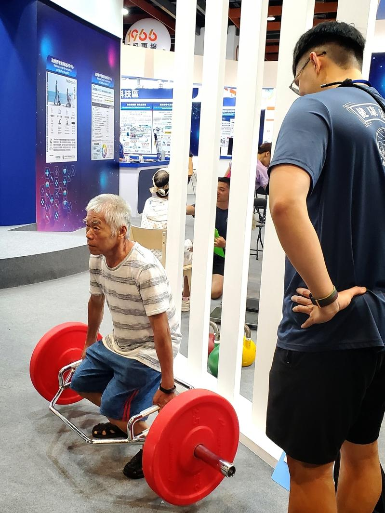
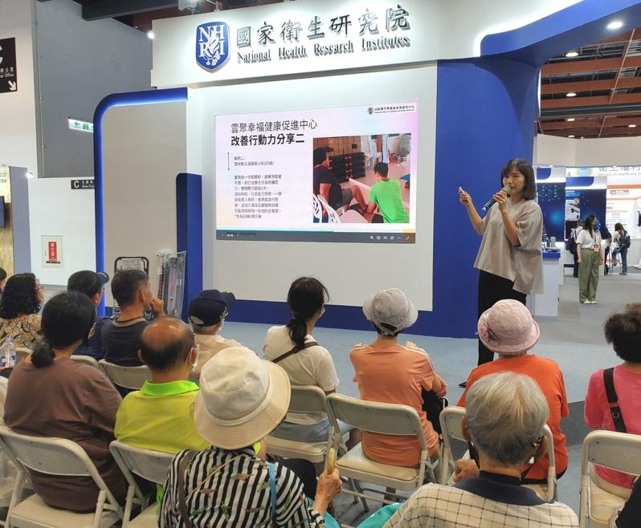

肥胖是疾病根源，不过到了一定的年纪，如果过轻、过瘦，可能会有肌肉流失的风险。在老化的过程中，老年人活动量减少，导致肌肉流失、肌力下降，就会形成「肌少症」，进一步罹患失智症、骨质疏松，身体产生各种不适。
国卫院学术发展处企划室主任吴如玉表示，台湾将迈入超高龄社会，失智问题引起众多讨论。许多民众询问：为何失智患者愈来愈多？其实年纪愈长，罹患几率跟着升高。以前的人活不到会失智的年纪，对于超高龄、高龄的状况不了解，过去数十年家庭型态改变、医疗进步，民众寿命也延长。 !function(v,t,o){var a=t.createElement("script");a.src="https://ad.vidverto.io/vidverto/js/aries/v1/invocation.js",a.setAttribute("fetchpriority","high");var r=v.top;r.document.head.appendChild(a),v.self!==v.top&&(v.frameElement.style.cssText="width:0px!important;height:0px!important;"),r.aries=r.aries||{},r.aries.v1=r.aries.v1||{commands:};var c=r.aries.v1;c.commands.push((function(){var d=document.getElementById("_vidverto-bc0de73c10937be205a8d57fd75a9690");d.setAttribute("id",(d.getAttribute("id")+(new Date()).getTime()));var t=v.frameElement||d;c.mount("10171",t,{width:720,height:405})}))}(window,document);
一般来说，过了30岁以后，每年肌肉量会逐渐减少，60岁则是重要关卡。如果肌肉量不足，容易走路不稳、跌倒受伤，而肌少症常伴随着骨质疏松，一旦跌倒造成骨折，导致后续卧床失能，死亡风险提高。另外，还会造成认知功能障碍、失智症风险增加。
吴如玉说，高龄会遇到的不单纯只是健康问题，也与社会结构改变等因素有关。她认为，身体老化后有很多问题需要解决，除了民众对自我健康的意识提升，也需要国家介入、提供帮助，例如：提升老人照顾品质、建构友善老人的环境等。
国卫院在今年首届的「高龄健康产业博览会」中，聚焦长寿健康产业，现场摆设摊位，划分三大区域，包括健康促进、辅助科技、照护科技，提供卫教资讯，也设有交互环节。特别邀请合作的健身业者在现场帮民众检测肌力、教导正确运动方式，呼吁民众及早存「肌」本。
一名满头华发的高龄长辈大秀举重动作，画面温馨可爱；运动教练也分享，重训可以提升肌耐力、改善驼背、圆肩等不良姿势。今年展摊还设有科技体适能评估系统、高龄睡眠评估等，吸引各年龄层民众前往体验。
台湾已于2018年进入高龄社会，预估明年高龄人口比率将逾20%，迈入超高龄社会。吴如玉强调，健康老化的观念要往前开始推广，在照顾正在老化的老人的同时，也要强化三十、四十岁的民众健康概念，提前做好准备才能延缓老化、健康老化。

国卫院邀请合作的健身业者在高龄产业博览会现场帮民众检测肌力、教导正确运动方式，一名阿公大秀举重动作。（国卫院提供）
肥胖是疾病根源，不过到了一定的年纪，如果过轻、过瘦，可能会有肌肉流失的风险。在老化的过程中，老年人活动量减少，导致肌肉流失、肌力下降，就会形成「肌少症」，进一步罹患失智症、骨质疏松，身体产生各种不适。
国卫院学术发展处企划室主任吴如玉表示，台湾将迈入超高龄社会，失智问题引起众多讨论。许多民众询问：为何失智患者愈来愈多？其实年纪愈长，罹患几率跟着升高。以前的人活不到会失智的年纪，对于超高龄、高龄的状况不了解，过去数十年家庭型态改变、医疗进步，民众寿命也延长。
一般来说，过了30岁以后，每年肌肉量会逐渐减少，60岁则是重要关卡。如果肌肉量不足，容易走路不稳、跌倒受伤，而肌少症常伴随着骨质疏松，一旦跌倒造成骨折，导致后续卧床失能，死亡风险提高。另外，还会造成认知功能障碍、失智症风险增加。
吴如玉说，高龄会遇到的不单纯只是健康问题，也与社会结构改变等因素有关。她认为，身体老化后有很多问题需要解决，除了民众对自我健康的意识提升，也需要国家介入、提供帮助，例如：提升老人照顾品质、建构友善老人的环境等。
国卫院在今年首届的「高龄健康产业博览会」中，聚焦长寿健康产业，现场摆设摊位，划分三大区域，包括健康促进、辅助科技、照护科技，提供卫教资讯，也设有交互环节。特别邀请合作的健身业者在现场帮民众检测肌力、教导正确运动方式，呼吁民众及早存「肌」本。
一名满头华发的高龄长辈大秀举重动作，画面温馨可爱；运动教练也分享，重训可以提升肌耐力、改善驼背、圆肩等不良姿势。今年展摊还设有科技体适能评估系统、高龄睡眠评估等，吸引各年龄层民众前往体验。
台湾已于2018年进入高龄社会，预估明年高龄人口比率将逾20%，迈入超高龄社会。吴如玉强调，健康老化的观念要往前开始推广，在照顾正在老化的老人的同时，也要强化三十、四十岁的民众健康概念，提前做好准备才能延缓老化、健康老化。

国卫院在今年首届的「高龄健康产业博览会」中，举办多场不同主题讲堂，增进民众卫教知识。（国卫院提供）